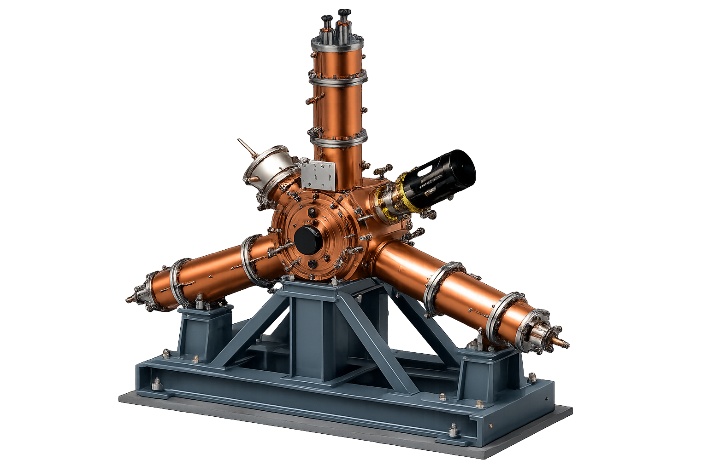
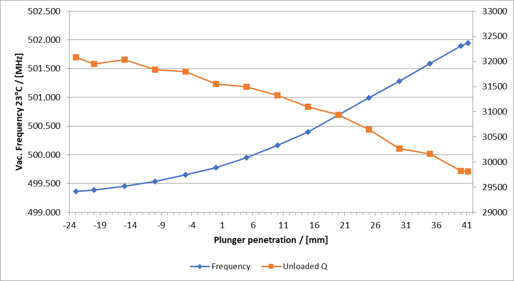

Scenario
Overview
3D View와 핵심 원인-결과 흐름을 한 화면에서 확인합니다.
3D View: Cavity render with component labels

1 Tuner AssemblyResonance tuning / detune referencefcav: -Detune est.: -
2 Cavity BranchCoaxial branch couples RF powerR / Q: 117.24 Ω
3 Fixed Support GirderRigid support for alignment stability
4 Main Cavity BodyN.C. cavity stores RF energyRsh: 3.40 MΩ
5 Input CouplerInjects RF power and monitors reflectionQe: -
Beam / Ring Basis
Total energy loss determines how much RF power must be restored each turn.
- fRF check
- -
- Beam Loss Power
- -
Beam Current Sweep
Cavity Configuration
- Voltage / Cavity
- -
- Eacc
- -
- Pc
- -
Cavity Count Sweep
Coupling & Q
- Qe = Q0 / β
- -
- QL = Q0 / (1+β)
- -
- βopt
- -
Coupling Meaning
Beam loading changes optimum coupling. β and QL affect detune sensitivity and reflected power condition.
RF Power Flow
SSPA
-
→
-
Line Loss
-
→
-
Coupler
-
→
-
Cavity
-
→
-
Beam
-
-
Dissipated
-
-
Reflected
-
-
Tuner Mapping
- Estimated fcav
- -
- Δf
- -
- df/dx
- -
- CAD Q0 Trend
- -
Detune Estimate
Tuner Plunger Tuning Range Reference
RI measurement/CAD trend example for 100 mm plunger tuner: vacuum frequency at 23°C and unloaded Q versus plunger penetration.

HPRF Margin
- Required @ Coupler
- -
- Required @ SSPA
- -
- Rated HPRF
- -
- Available Margin
- -
| # Cavities | Dissipated Power [kW] | Beam Power [kW] | HOM Loss [kW] | Required Coupler [kW] | HPRF Output [kW] | Reflected Power [kW] | Rated HPRF [kW] |
|---|---|---|---|---|---|---|---|
| 8 | 28.15 | 93.88 | 5.00 | 127.07 | 137.07 | 0.042 | 187.8 |
| 9 | 22.24 | 83.45 | 5.00 | 110.77 | 120.77 | 0.079 | 165.4 |
| 10 | 18.01 | 75.11 | 5.00 | 98.57 | 108.57 | 0.448 | 148.7 |
| 11 | 14.89 | 68.28 | 5.00 | 89.14 | 99.14 | 0.976 | 135.8 |
| 12 | 12.51 | 62.59 | 5.00 | 80.73 | 90.73 | 0.629 | 124.3 |
Effect Map
입력 파라미터가 어떤 계산 결과와 RF 운전 판단으로 연결되는지 한눈에 보는 흐름표입니다.
Beam Current→Beam Power→Forward Power→HPRF Margin
Total Voltage→Voltage / Cavity→Eacc→Dissipated Power
# Cavities→Vc, Pc, Pb→Required Coupler→NC Power Table
Tuner Position→f_cav→Δf→Detune Estimate
Coupling Beta→Qe→QL→Detune Sensitivity
Line / HOM Loss→Required SSPA→Rated HPRF→Available Margin
Flow Table
| Group | Main Input | Direct Result | Final Check |
|---|---|---|---|
| Beam | Ib, U loss | Pb, Pg | RF power demand |
| Cavity | Vacc, Ncav, Rsh | Vc, Eacc, Pc | per-cavity load |
| Coupling | β, Q0 | Qe, QL, βopt | reflection tendency |
| Tuner | Position, f_ref | f_cav, Δf | detune estimate |
| HPRF | Line/HOM loss, op point | SSPA output, rated HPRF | available margin |